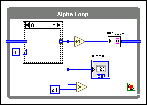
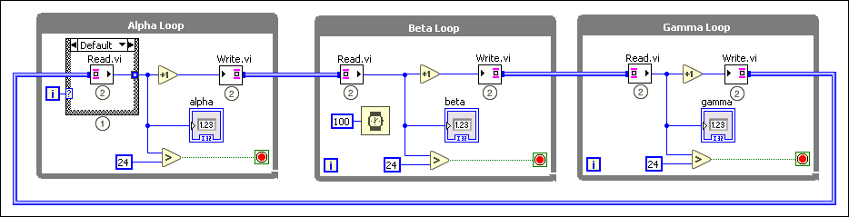
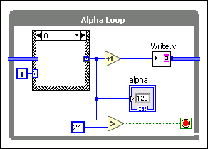

 |
Note��You also can remove the dataflow dependency by introducing a timeout on one of the endpoints, or using a template channel that does not wait, such as a Tag channel. |

Cycles occur if a data flow originates from an output of a node and terminates as an input of the same node. If you use wires other than channel wires, such cycles are illegal and break the VI unless you add a Feedback Node that provides the cycle with a starting point. With channel wires, you can create cycles without adding a Feedback Node because channel wires do not create dataflow dependencies among endpoints. Every endpoint acts as a starting point.
This functionality is useful when you need to communicate messages back and forth among loops that depend on each other to update their statuses from time to time. The following illustration demonstrates a cycle that you can build using channel wires. The three loops run in parallel and continuously pass an integer around in a circle, each one incrementing it.

The following list describes important details about the previous diagram:
|
Alpha Loop includes a Case Structure. The Case Structure has two selector labels: Default and 0. The 0 case is designed as the illustration below to initiate the cycle at the first iteration. The Case Structure removes the dataflow dependency among the three loops so that each loop writes or reads data without waiting for another loop to pass data in. 
|
||
|
The Write and Read endpoints in the three loops pass the data in a cycle. This example uses the endpoints of the One Element Stream template. Each writer waits until the upstream reader finishes reading a value. Then the writer increments the value and writes the incremented value to the next channel for the next loop in the line. |